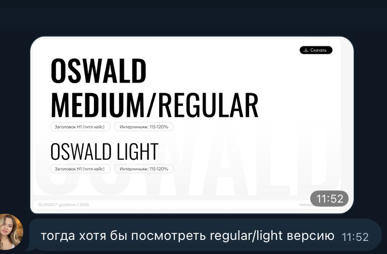
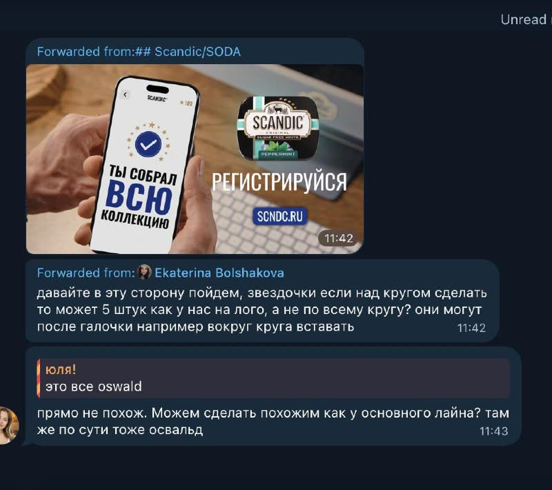

1
Лок-ап и шрифт: три строки, «ВСЮ» крупнее, Oswald Regular вместо жирного сделано
текст ты собрал всю коллекцию нужно разделить на 3 строчки и слово «всю» написать капсом ВСЮОля из агентства, через Юлю · 19.11, 15:55
прямо не похож. Можем сделать похожим как у основного лайна? там же по сути тоже освальдЕкатерина Большакова · 23.11, 11:43 (скрин от Юли 11:50)
вместо жирного на «ты собрал всю коллекцию»Юля · 23.11, 11:53, с гайдлайном шрифта Scandic
Что это значит: гайд Scandic — Oswald Medium / Regular / Light, интерлиньяж 115–120%. В статике стоит Regular, интерлиньяж 117%, все три строки одной ширины, «ВСЮ» в 2 раза крупнее соседних строк. В анимации текст не перенабирать: берём слои из статики как есть.

гайд шрифта от Юли
комменты клиента 23.11